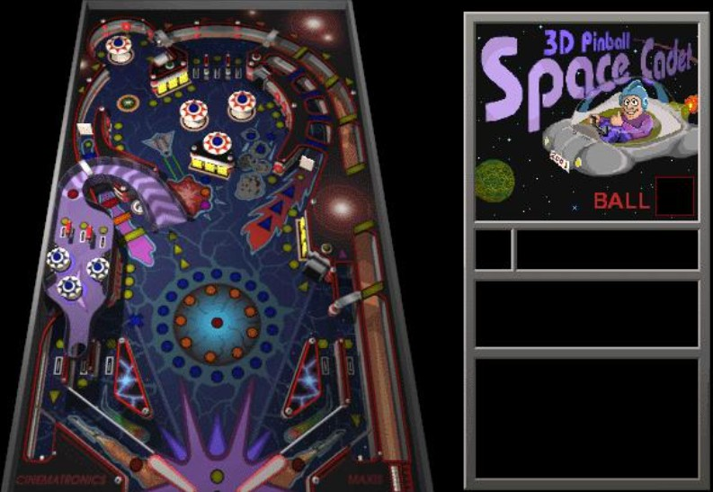

- Built with
- Arduino Uno 4, Electronics
- Skills
- Laser cutting, 3D printing, CAD
- Software
- SolidWorks
Overview
Given the task of creating a mechatronics project that incorporated input, output and movement I decided to make a Pinball machine. I chose a pinball machine since I thought that it was a suitable challenge that had real difficulty in software such as timing and non-blocking code and I also wanted to learn to use the laser cutter with SolidWorks as my previous experience, I was using Adobe Illustrator with 2D files. It also offered the opportunity to 3D print parts which I hadn't been able to do since 2019 and had very little experience in. I knew these skills would be important to develop with the upcoming Warman challenge that I would do in 2026 so I used this project to learn these skills.
Inspiration
My inspiration is from space cadet pinball which was likely the first computer game I played when I was very young. When I finally found it after years of not knowing what it was except in a distant memory, I thought it would be a fun nostalgic opportunity to recreate it in a tabletop minigame.

I was also inspired by working around people completing the 2025 Warman challenge who use lasercut plywood to keep their machines light and finger joints to assemble the frames of their machines. Combining both these ideas I started to come up with a design in SolidWorks that I could make.
Initial Design
The initial design was to have a simplified version of space cadet pinball with multiple sensors at various positions, however this was later simplified to only 3 sensors since I found in testing that for one the SG90 servos I had aren't very fast so aiming for further targets was going to be really difficult, two the sensors that would easily integrate into a plywood frame were IR sensors rather than ultrasonic and hall effect and I only had 2 IR sensors, the final challenge was ensuring the Frame was not too large as to not waste material and guarantee that the servo could hit the ball to the top of the frame.


The initial design tries its best to incorporate as many elements as possible of the original game, but it just wasn't feasible to add this much so I heavily simplified it when I began the CAD. The sketches still demonstrate the structure, with a ramped incline, room for a breadboard, Arduino and buttons in housing below the pinball track. What was essential was understanding that the ball needs to move through a tunnel of some description for the IR sensor to reliably trip when the ball travels past it. The sketches helped me to work out where these paths would be. It also helped me get an idea of the scale it should be, where I estimated that the length of the base should be around 40cm.